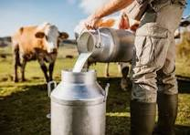
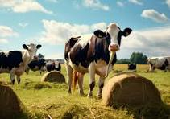
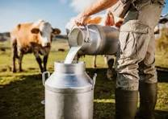
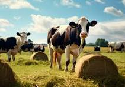

Dairy farming isn’t for the faint of heart. It’s early mornings and late nights, lots of hard work and doing more with less — but dairy farmers will say it’s all worth it when you’re doing what you love and nourishing your community with delicious dairy foods.
 



Andanamala dairy farmers provide the best care for their cows in order to produce great milk — which is made into the delicious dairy foods we know and love!
fluid milk is never touched by human hands! During the milking process, milk safely travels from the cow’s udder to a bulk tank, where it is cooled to at least 45°F to preserve its quality. Within 72 hours, milk is transported to a dairy processing plant in an insulated tanker.
All milk is tested for antibiotic and other drug residues before it leaves the farm and is tested again before it leaves the truck and enters the plant.
In 2020, less than .001% of milk tested positive for antibiotic residues –
it was all immediately disposed of and never entered the food chain
After milk leaves the farm and enters a dairy processing plant, it is first pasteurized to kill any disease-causing bacteria, such as Salmonella and E.coli. Pasteurized milk is heated to 161°F for 15 seconds and ultrapasteurized milk is heated to 280°F for 2 seconds. It is then rapidly cooled to ensure that its freshness is preserved.
Next, different types of milk (skim, low fat, 2% or whole) are made through standardization, by managing the amount of fat in each product. Milk is then homogenized, which means it is mixed to keep the texture consistent and ensure that the cream won’t separate and rise. Finally, milk is cooled and bottled and transported to a grocery store or school near you!
To make cheese, “starter cultures” are added to milk in order to ferment lactose, milk’s natural sugar, into lactic acid. This process helps determine the cheese’s flavor and texture and different types of cultures are used to create different types of cheese.
Next, an enzyme called rennet is added to milk, causing it to coagulate and turn into a gel similar to yogurt. Once it starts to gel, the cheesemakers cut it, which allows the liquid whey to come out.
Once the curds are cut, they’re stirred and heated to release even more whey. After the curds are separated into whey, they are pressed into their final shape.
To make harder cheeses such as Cheddar or Colby, the curds are salted and pressed into a form. To make softer cheeses like mozarella or Swiss, curds are pressed into a hoop and brined. Once cheese is shaped, it may be aged for a while before its ready to eat.